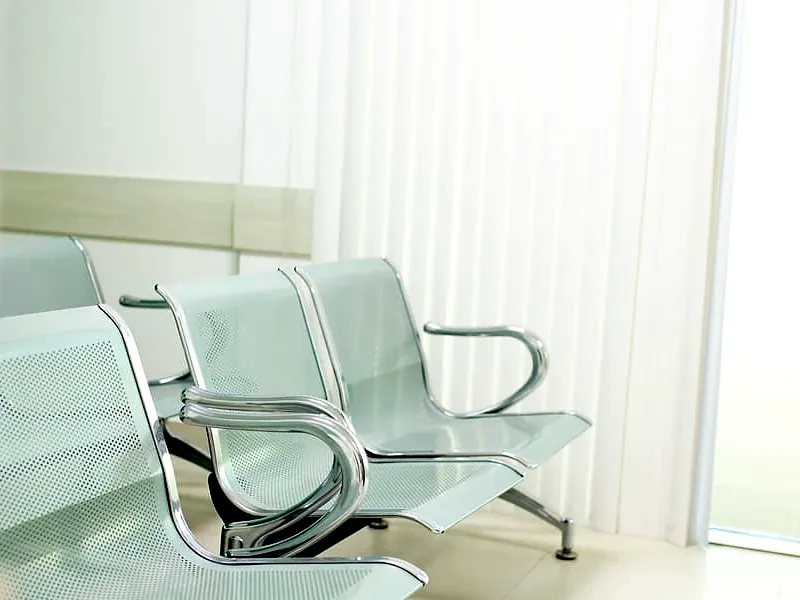

Início · A clínica
A clínica que nasceu no espaço que o bairro já conhecia
Em Tamoios, muita gente já tinha consultado neste endereço. Quando o atendimento da Unimed deixou o distrito, a estrutura ficou pronta, e um grupo de médicos e empreendedores da região decidiu que Unamar não ficaria sem especialista perto de casa.

 Consultórios
Consultóriosem Unamar
- O ponto
Seis consultórios prontos, no UnaPark Shopping
O espaço já era conhecido pelo bairro. O grupo assumiu a estrutura inteira, seis consultórios, recepção e sala de espera, e abriu a Unimedic em agosto de 2026.
- Os médicos
Quem já atendia a região continuou atendendo
Os sócios médicos, Dr. Diogo Parreira Sarmento e Dr. Luís Eugênio Lacerda de Barros, são da região e trouxeram para a Unimedic pacientes que já acompanhavam.
- A ideia
Particular acessível e convênio, no mesmo lugar
A Unimedic atende oito convênios e tem consulta particular a partir de R$ 150. Para quem não tem convênio, o clube UnaMais reduz o valor das consultas e dos exames da família.
- Hoje
Especialistas, odontologia e laboratório
São nove especialidades médicas, terapias, uma equipe dedicada a neurodivergentes, odontologia e laboratório de análises clínicas. Tudo de segunda a sexta, das 8h às 18h.
A direção da clínica é do Dr. Marcus Rezende, com família em Tamoios desde 1978. A ideia é simples: ninguém em Unamar deveria ter que escolher entre pagar as contas do mês e levar o filho ao médico.
A equipe da recepção é daqui. É quem atende o WhatsApp, confirma a agenda e recebe cada paciente pelo nome.
Administrador da clínica e figura conhecida na Região dos Lagos, o Marcus não é médico e não finge ser. Cuida para que a Unimedic funcione como uma clínica de bairro: preço claro, resposta rápida no WhatsApp e médico que explica.
Seis consultórios, sala de espera e recepção no UnaPark Shopping


Ser a clínica de referência do segundo distrito de Cabo Frio sem deixar de ser a clínica do bairro.
Atender a família inteira de Unamar e Tamoios com especialista perto de casa, preço claro e o mesmo cuidado para quem vem pelo convênio, no particular ou pelo clube.
- Preço claro antes de marcar
- Resposta rápida no WhatsApp
- Médico que explica
- A família inteira num lugar só
- Respeito ao tempo do paciente
- Gente daqui
Profissionais da Unimedic
A agenda de cada profissional é confirmada na hora de marcar. Pergunte pelo nome no WhatsApp.
- Dr. Diogo Parreira SarmentoClínica médica · sócio
- Dr. Luís Eugênio Lacerda de BarrosOrtopedia e reumatologia · sócio
- Dr. Reginei ParreiraPediatria e clínica médica
- Dra. Jane Blanco TeixeiraGeriatria e clínica médica
- Dr. Dinardo Luís de Almeida TrianiGinecologia
- Dr. Jorge Wilson de Moraes BussonsDermatologia
- Dr. Luciano SiqueiraNeuropediatria
- Dra. Andrea Bentes de Freitas RezendeNutrologia
- Dr. Igor FernandesOdontologia
- Andrea de Almeida MoreiraNutrição
- Yára MartinsFonoaudiologia
- Márcia Andréia Marques RientiPsicologia